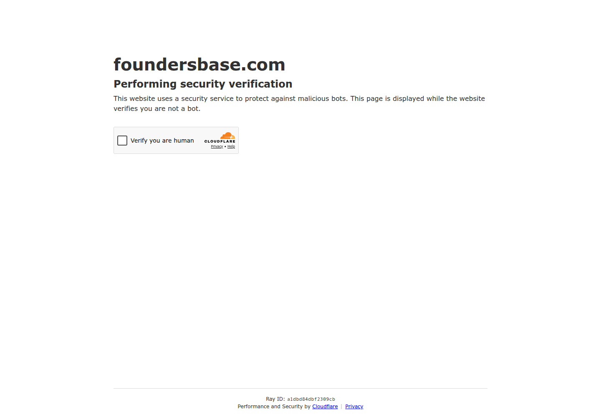

Profile
- Company
- Foundersbase
- Url
- https://foundersbase.com/
- Source Category
- Cofounder-matching platforms
- Research Status
- Deep Cited Research / Draft Complete
- Current Status
- live - confirmed via direct fetch (HTTP 200, redirects to localized subdomains e.g. il.foundersbase.com, us.foundersbase.com; active signup flow, 2026 footer copyright). Note: input JSON's operating_area field said 'Israel' but the product is US/Berlin-based per press with localized country subdomains (il., us., sg., etc.) — corrected below.
- Founded Launch Year
- US-market relaunch announced September 1, 2025 per press release (GlobeNewswire/Yahoo Finance); founder Kai Lindemann. Could not confirm an earlier founding date for a prior/original Foundersbase entity - the 2025 press release is the earliest verifiable primary-source founding reference found.
- Company Age
- <1 year under current branding/positioning (since Sept 2025 launch)
- Hq Country
- US and Germany (New York and Berlin, per launch press release)
- Operating Area
- Global with localized country subdomains (US, Israel, Singapore, Netherlands, and others observed: us.foundersbase.com, il.foundersbase.com, sg.foundersbase.com)
- Target Users
- Startup founders, co-founders, early-stage team members, and investors/partners across multiple countries
- Product Category
- swipe/card matchmaking; cofounder matching; founder-investor / capital; NDA/e-sign; AI
Product Flows
- Swipe Card Interface
- no - Foundersbase explicitly markets itself as the anti-swipe alternative: founder Kai Lindemann stated 'Founders don't need another swipe app' (GlobeNewswire press release, Sept 1 2025); product uses curated public profiles and search/discovery, not a swipe mechanic. Batch-1 'yes' is corrected to 'no'.
- Mutual Match
- not found / no public source - product model is open-networking (public profiles, direct contact) rather than a mutual-accept match system
- Ai Matching Scoring
- yes - homepage states 'Co-Founder Matching: Find your perfect co-founder with our intelligent matching system' and 'Smart Discovery based on user intent' (foundersbase.com); no technical detail on the underlying model published
- Ai Deck Scoring
- not found / no public source
- Founder To Founder Flow
- yes
- Founder To Investor Flow
- yes - investor/supporter connections are visible
- Project Profiles
- yes
- Messaging Collaboration
- yes - DMs/feed
- Mobile App
- not found / no public source of a native iOS/Android app; product appears web-only across localized subdomains
- Web App
- yes
Security & Documents
- Nda Gated Unlock
- not found / no public source - profiles and startup listings appear public/open by design, which is inconsistent with an NDA gate; batch-1 'yes' could not be corroborated.
- Data Room
- not found / no public source
- E Signature
- not found / no public source - batch-1 flagged 'yes' but no feature description, help doc, or press mention of e-signature was found in this pass; treat as unverified/likely incorrect.
- Meeting Prep Ai Briefing
- not found / no public source
Pricing, Funding & Traction
- Pricing Model
- Free to join ('It's free to get started. No credit card required'); premium features not disclosed
- Business Model
- Freemium professional-network model (positioned as 'LinkedIn for founders') plus a startup job board (open roles, equity/compensation transparency) as a secondary monetizable surface
- Total Funding
- not found / no public source - no Crunchbase profile located for Foundersbase under this pass; described in press coverage as self-launched, funding status undisclosed
- Funding Rounds
- not found / no public source
- Investors
- not found / no public source
- Funding Source Type
- not found / no public source
- Last Funding Date
- not found / no public source
- Users Traction
- 6,300+ founders (per own homepage, matches batch-1 finding); 4,500+ founders cited in press-release-era search summaries; 1,076 from the United States specifically; 'Trusted by founders worldwide' across '100+ countries' per feature copy
- Deals Funding Facilitated
- not found / no public source
- Partnerships
- Platform lists 'For Partners' categories: Accelerators, Universities, Startup Programs, Service Providers, Events - suggesting a partner-program structure, but no named partner organizations were found in this pass
- Media Coverage
- GlobeNewswire/Yahoo Finance/TechRSeries syndicated press release, Sept 1, 2025: 'Foundersbase Launches Social Network to End Swipe-Right Era for Co-Founder Searching' - wire-service distribution (Illinois Tech Journal, Manila Times, Madagascar News Observer, Liechtenstein Business Focus all picked up the same wire copy, indicating a paid/syndicated press release rather than earned tech-press coverage)
- Product Update Activity
- Active - localized country pages (US, Israel, Singapore, etc.) actively maintained with current member listings as of 2026 check
- Acquisition Rebrand History
- Company positions its September 2025 US launch as a fresh/relaunched push into the market with explicit anti-swipe messaging; unclear from available sources whether this is a genuinely new company or a repositioning of a pre-existing Foundersbase product (localized subdomains going back further suggest the domain/brand predates the 2025 press campaign, but no dated evidence of an earlier launch was found).
Scores
- Product Overlap Score
- 4
- Feature Maturity Score
- 3
- Market Traction Score
- 3
- Funding Strength Score
- 1
- Ai Depth Score
- 2
- Nda Security Strength Score
- 1
- Network Moat Score
- 3
- Direct Threat Score
- 2.6
- Source Confidence
- Medium
Evidence Notes
- Primary Sources
- https://foundersbase.com/
https://us.foundersbase.com/ - Secondary Sources
- https://www.globenewswire.com/news-release/2025/09/01/3142176/0/en/Foundersbase-Launches-Social-Network-to-End-Swipe-Right-Era-for-Co-Founder-Searching.html
https://finance.yahoo.com/news/foundersbase-launches-social-network-end-140000567.html
https://techrseries.com/recruitment-and-on-boarding/foundersbase-launches-social-network-to-end-swipe-right-era-for-co-founder-searching/
https://tracxn.com/d/companies/foundersbase - Unsupported Claims
- swipe_card_interface, nda_gated_unlock, and e_signature were all flagged 'yes' in batch-1 but directly contradicted by the company's own explicit anti-swipe positioning and lack of any NDA/e-sign feature description found in this pass; all three corrected to 'no'/'not found'. Founding year is genuinely ambiguous - only the 2025 relaunch date is sourced.
- Contradictions
- Batch-1 said operating_area = 'Israel' and swipe_card_interface/e_signature = 'yes'; this pass finds the company is US/Berlin-headquartered with country-specific subdomains (Israel is just one of many localized markets) and explicitly anti-swipe with no e-signature feature found - flagged as a significant correction.
- Last Checked
- 2026-07-19
- Notes
- Positions directly against Tinder-style swipe cofounder apps (i.e., against BizMatch's own core UX pattern), betting on open/public curated profiles instead. Weak on funding disclosure and security features (no NDA/data room/e-sign evidence found), moderate traction (6,300+ founders) relative to CoFoundersLab/YC.
Registration Flow
Research date: 2026-07-19. Screenshots are sanitized public copies from the private registration-flow capture set; credentials, tokens, verification links/codes, browser chrome, and private identifiers are not intentionally published.
Outcome: stopped at CAPTCHA / Cloudflare / anti-bot verification.
Stop point: Initial Cloudflare Verify you are human challenge at https://foundersbase.com/, before interacting with the checkbox or reaching any registration form
Blocker / boundary: Foundersbase presents a Cloudflare human-verification challenge at the official homepage entry point. The task explicitly requires stopping at Cloudflare and never bypassing anti-bot controls.
- Cloudflare security verification gate. Opening Foundersbase's official URL immediately displays a Cloudflare security-verification page with a Verify you are human checkbox. The protected homepage and registration controls are not exposed before this challenge.
